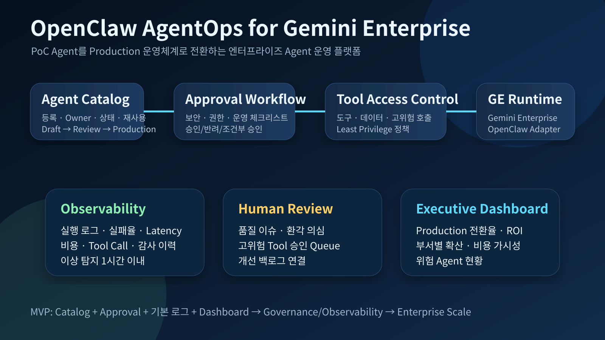

기업 내에서 증가하는 OpenClaw 기반 AI Agent PoC를 Gemini Enterprise Agent Platform 위의 Production 운영체계로 전환하기 위한 Agent 운영·거버넌스 플랫폼입니다.
기업의 생성형 AI 활용은 Assistant에서 Tool-using Agent와 Multi-Agent Workflow로 이동하고 있습니다. 그러나 Agent PoC가 늘어날수록 “누가 만들었는가, 어떤 권한을 갖는가, 비용은 얼마인가, 실패하면 누가 책임지는가”라는 운영 문제가 커집니다.
OpenClaw AgentOps for Gemini Enterprise는 GE 위에서 OpenClaw Agent를 등록·검토·배포·관측·평가·통제하는 운영 계층입니다. 핵심은 Agent 개발 속도를 늦추지 않으면서 기업 운영 기준을 함께 심는 것입니다.
UI/API 계층은 Agent Catalog와 Approval Workflow를 제공하고, Policy Engine은 Tool Access Control과 데이터 접근 정책을 판단합니다. OpenClaw Adapter는 OpenClaw Runtime을 Gemini Enterprise Agent Platform 실행 구조와 연결합니다.
